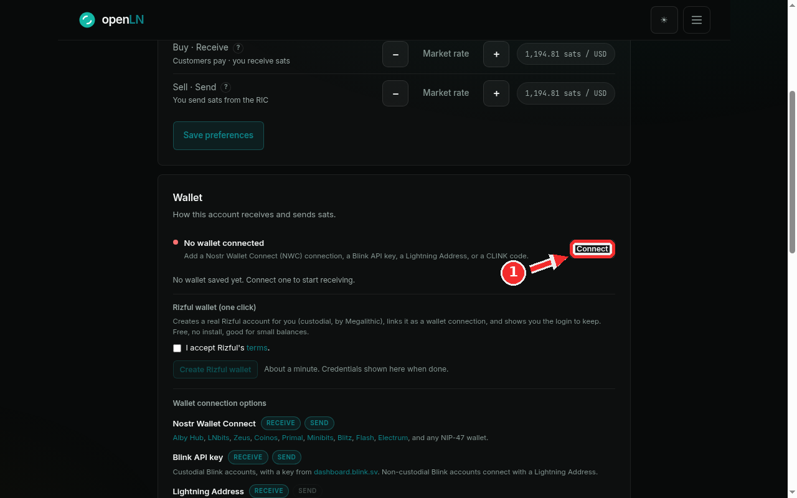
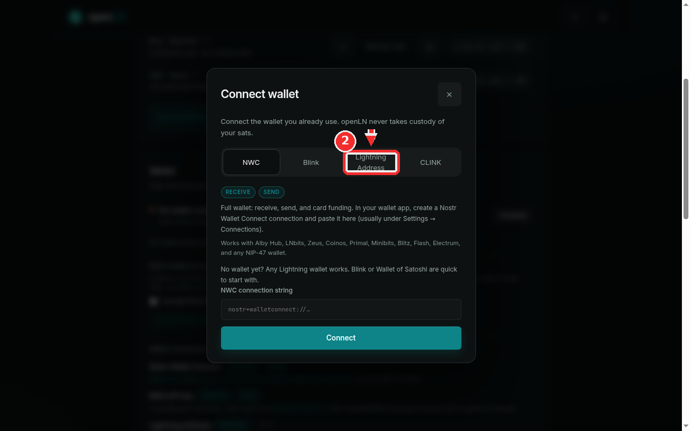
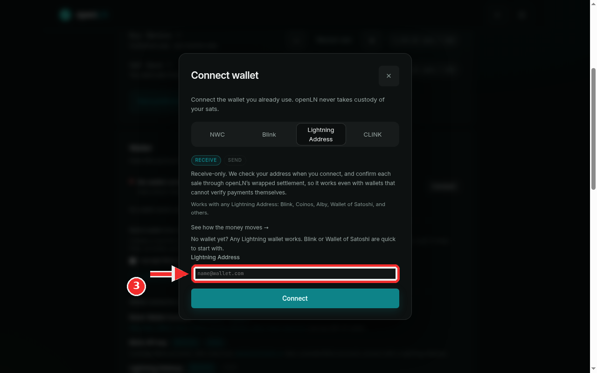
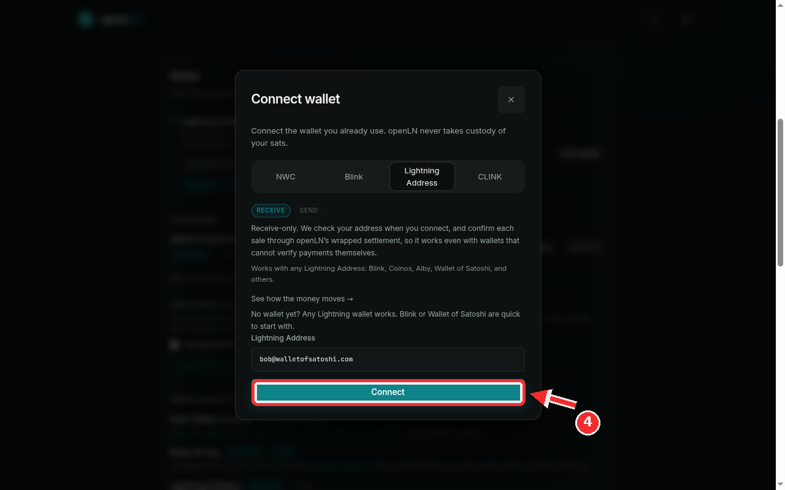
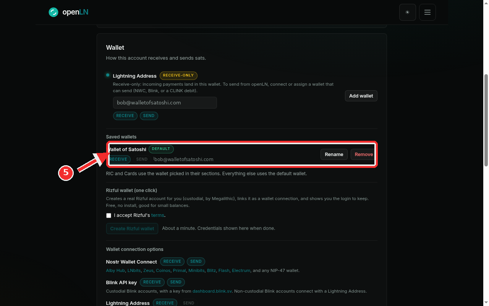

Add a Wallet of Satoshi wallet
This guide walks you through connecting a Wallet of Satoshi Lightning Address to your openLN account so you can start receiving Bitcoin payments. Wallet of Satoshi is one of the quickest wallets to start with: there is nothing to set up beyond the app itself, and it gives you a Lightning Address the moment you open it. The whole thing takes about a minute.
- You are signed in to your openLN account (any device, phone or computer).
- You have the Wallet of Satoshi app (or their website) and can see your Lightning Address. It looks like
name@walletofsatoshi.com. - That is all. Nothing is charged during setup and no funds move.
Open the Wallet section and press Connect
Go to Settings and find the Wallet card, the one that starts with "How this account receives and sends sats". On the right of the "No wallet connected" line you will see a button: it reads Connect when this is your first wallet, and Add wallet when you already have one saved. Click it. The same dialog opens either way.

Choose the Lightning Address tab
The Connect wallet dialog offers four kinds of connections: NWC, Blink, Lightning Address and CLINK. For Wallet of Satoshi, pick the Lightning Address tab. The text under the tabs explains what this kind of connection can do: it receives sats into your Wallet of Satoshi.

Type your Wallet of Satoshi address
In the address field, type your Lightning Address exactly as it appears in the Wallet of Satoshi app. For example: bob@walletofsatoshi.com. Check the spelling before you continue: openLN will ask Wallet of Satoshi whether the address exists, and a typo will be caught here.

Press Connect
Now press the big Connect button at the bottom of the dialog. openLN contacts Wallet of Satoshi, confirms the address can receive, and saves it to your account. This takes a few seconds. Nothing is charged, and no funds move.

Done: your wallet is connected
Your wallet now appears in two places. At the top of the Wallet card it is listed as your active receive wallet, tagged RECEIVE-ONLY. Under Saved wallets you can rename it, make it the default, or remove it later. You are ready to receive.

- Receive-only. Wallet of Satoshi cannot verify payments on its own, so every sale settles through openLN's wrapped settlement. Sales still confirm normally, on the RIC and cards too.
- To send sats as well, connect an NWC wallet (Alby Hub, Zeus, Coinos, Primal, and others) and pick it wherever sending is needed.
- Assign it anywhere. In the RIC and Cards sections you can pick this wallet for receiving, or make it the default for everything. openLN never takes custody of your sats.